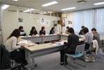

| 【日 時】 | ４月22日(木)15:30～16:45 |
| 【場 所】 | 埼玉県生協連・会議室 |
| 【出席者】 | 11人(埼玉消団連、新婦人、母親大会連絡会、埼玉県生協連、生協ネットワーク協議会、事務局) |

＜伊藤代表幹事・事務局長あいさつ＞
消費者が声をあげることにより、食の安全行政は進んできています。食の安全県民会議をはじめ様々なところで声を出していただきたいと思います。
| ■ | 議題 | ||
| １． | 2010年度第1回食の安全・安心消費者懇談会 | ||
| 「平成22年度埼玉県における食品安全の重点的取組み等について」 食品安全課、農産物安全課、畜産物安全課と意見交換を行いました。 |
|||
| ２． | オンブズ会議設置要綱を確認しました。 | ||
| ３． | 2009年度第６回オンブズ会議で出されました意見を加筆した2009年度の活動のまとめと2010年度活動計画(最終案)を提案し、確認されました。 | ||
| ４． | 2010年度オンブズ会議開催予定日を提案し、調整中の7月以降は都度日程調整を行うことで 確認されました。 |
||
| ５． | 第２回オンブズ会議の日程と学習懇談会のテーマについて | ||
| ６． | 2010年度 関東農政局 第1回消費者団体等との意見交換会の日程やテーマについて | ||